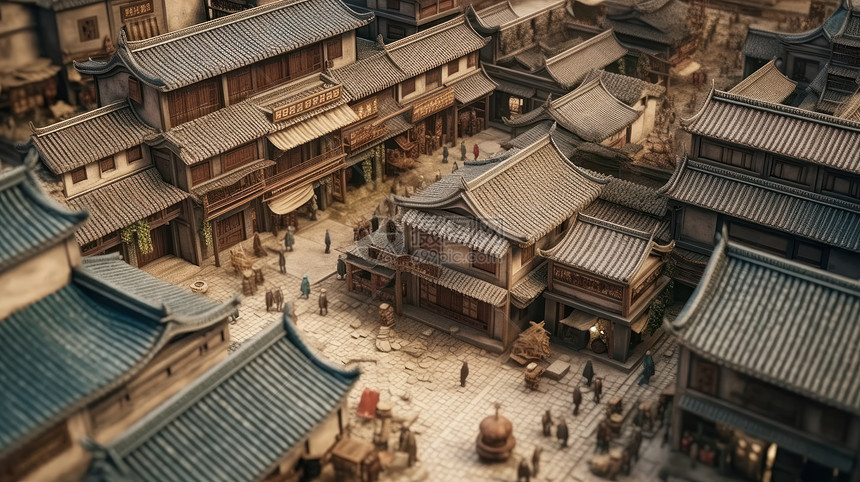

德阳历史文化
三星堆遗址与德阳历史
三星堆遗址位于德阳广汉市，它的发现对于德阳乃至整个古蜀文明的研究具有极其重要的意义。三星堆出土的大量文物，展示了古蜀时期高度发达的青铜文化，也见证了德阳这片土地在远古时代就有着灿烂的文明，其神秘的造型和精湛的工艺令人惊叹不已。

德阳在秦汉时期
秦汉时期，德阳地区已成为重要的地域。在秦朝推行郡县制后，德阳所在区域纳入了统一的行政管理体系。到了汉代，德阳的农业、手工业等得到进一步发展，人口逐渐增多，文化交流也日益频繁，为后来的发展奠定了基础。
德阳在唐宋时期
唐宋时期是德阳发展的重要阶段。唐代时，德阳地区的经济繁荣，商业活动频繁，文化艺术也蓬勃发展，出现了许多文人墨客留下的诗词佳作。宋代，德阳的农业生产技术进一步提高，水利工程的修建使得农田灌溉更加便利，促进了当地经济的持续发展。
德阳在明清时期
明清时期，德阳的城市建设和文化传承有了新的发展。众多的古建筑如德阳孔庙等在这一时期得以修建或修缮，保存至今成为了德阳历史文化的重要见证。同时，德阳的民间艺术、手工艺等也在这一时期达到了较高的水平，如绵竹年画等极具地方特色的艺术形式深受人们喜爱。
近现代德阳的发展
近现代以来，德阳随着时代的变迁经历了巨大的变革。工业逐渐兴起，特别是在新中国成立后，德阳成为了重要的工业基地，机械制造、化工等产业蓬勃发展。同时，教育、科技等领域也不断进步，为德阳的现代化发展注入了新的活力。